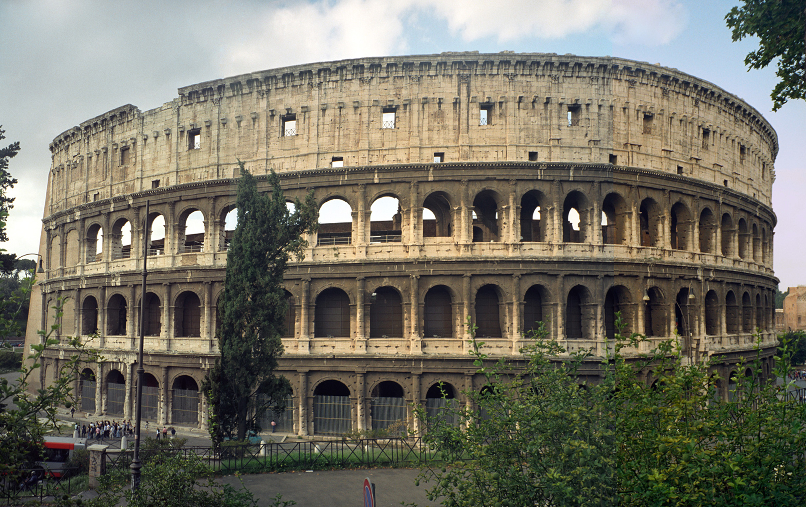
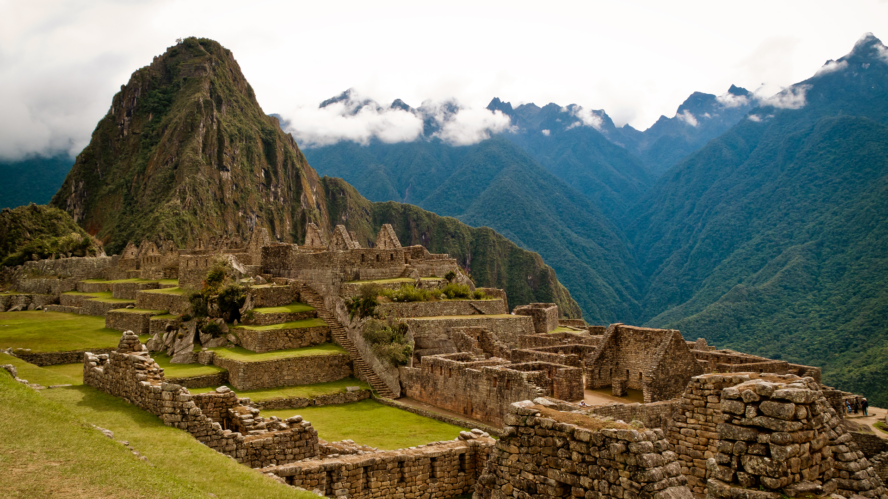

Ancient Roman architecture
Posted on 01.01.2017 by Someone

Ancient Roman architecture adopted the external language of classical Greek architecture for the
purposes of the ancient Romans, but grew so different from Greek buildings as to become a new
architectural style. The two styles are often considered one body of classical architecture. Roman
architecture flourished in the Roman Republic and even more so under the Empire, when the great
majority of surviving buildings were constructed. It used new materials, particularly concrete, and
newer technologies such as the arch and the dome to make buildings that were typically strong and
well-engineered. Large numbers remain in some form across the empire, sometimes complete and still
in use.
view post
Ancient Greek architecture
Posted on 01.01.2017 by Someone

The architecture of ancient Greece is the architecture produced by the Greek-speaking people
(Hellenic people) whose culture flourished on the Greek mainland, the Peloponnese, the Aegean
Islands, and in colonies in Anatolia and Italy for a period from about 900 BC until the 1st century
AD, with the earliest remaining architectural works dating from around 600 BC.[1]
Ancient Greek architecture is best known from its temples, many of which are found throughout the
region, mostly as ruins but many substantially intact. The second important type of building that
survives all over the Hellenic world is the open-air theatre, with the earliest dating from around
525-480 BC.
view post
Ancient Indian Architecture
Posted on 01.01.2017 by Someone

Indian architecture is as old as the history of the civilization.The earliest remains of
recognizable building activity in the India dates back to the Indus Valley cities. Among India's
ancient architectural remains, the most characteristic are the temples, Chaityas, Viharas, Stupas
and other religious structures. In ancient India, temple architecture of high standard developed in
almost all regions. The distinct architectural style of temple construction in different parts was a
result of geographical, climatic, ethnic, racial, historical and linguistic diversities.
The Rock-cut structures present the most spectacular piece of ancient Indian art specimen. Most of
the rock-cut structures were related to various religious communities.
view post